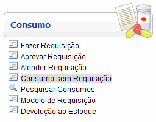
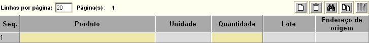
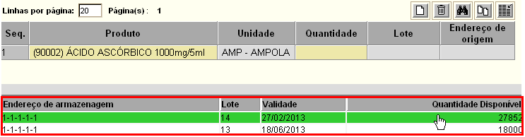

Consumo sem Requisição [ Voltar ]Utilize este formulário para efetuar um consumo sem a necessidade de requisição prévia. O formulário "Consumo sem Requisição" encontra-se dentro do menu "Consumo". 
Ao clicar no nome do formulário, o sistema exibirá a seguinte tela:  Siga os passos abaixo para realizar um consumo sem requisição: 1º Passo: preencha os dados principais do consumo.
2° Passo: clique no botão  para salvar o consumo. Assim que o consumo é salvo, uma grade para
inclusão dos produtos do consumo é exibida na parte inferior da tela. para salvar o consumo. Assim que o consumo é salvo, uma grade para
inclusão dos produtos do consumo é exibida na parte inferior da tela.
4° Passo: informe os produtos, quantidades e selecione os endereços de armazenagem onde se encontram. Após informar o produto e a quantidade, observe que na parte inferior da tela é exibida uma tabela contendo todos os locais de estoque do item (ver imagem abaixo). Selecione com um clique o endereço desejado. Nenhum endereço será exibido caso o produto não possua estoque disponível. Dica: uma vez na grade, pressione a tecla "Enter" para ir de um campo a outro. 
5° Passo: após informar todos os dados do consumo, clique no botão  para concluí-lo. Clique no botão para concluí-lo. Clique no botão  para visualizar a
tela de impressão da do relatório de consumo. Em seguida, clique no botão para visualizar a
tela de impressão da do relatório de consumo. Em seguida, clique no botão  [Imprimir]
do navegador para imprimi-lo. [Imprimir]
do navegador para imprimi-lo. |
 [Procurar] ao lado do
campo para selecionar o local desejado a partir de uma listagem com os locais cadastrados no
sistema
[Procurar] ao lado do
campo para selecionar o local desejado a partir de uma listagem com os locais cadastrados no
sistema